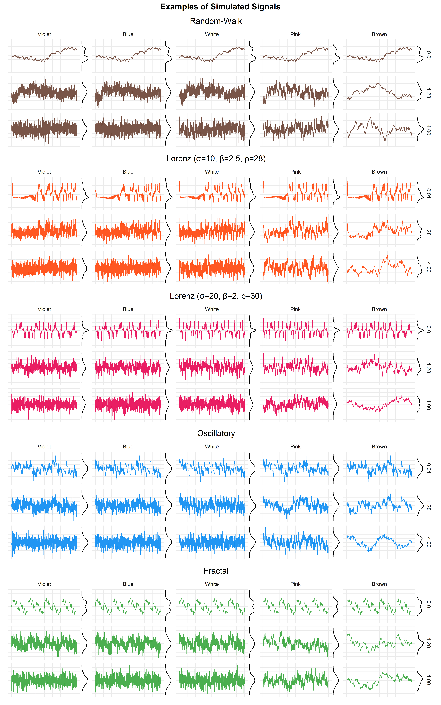
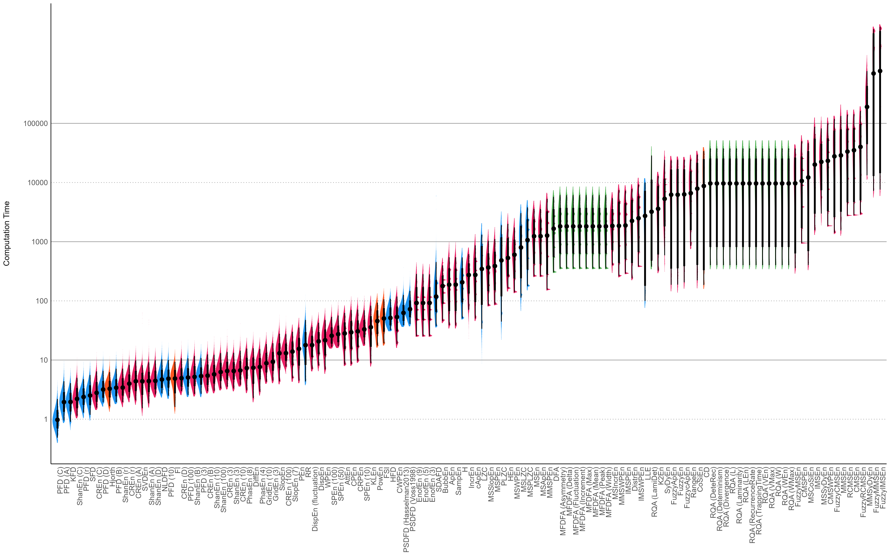

The Structure of Chaos: An Empirical Comparison of Fractal Physiology Complexity Indices using NeuroKit2
Contents
The Structure of Chaos: An Empirical Comparison of Fractal Physiology Complexity Indices using NeuroKit2#
This study can be referenced by citing the package and the documentation.
We’d like to improve this study, but unfortunately we currently don’t have the time. If you want to help to make it happen, please contact us!
Introduction#
Complexity is an umbrella term for concepts derived from information theory, chaos theory, and fractal mathematics, used to quantify unpredictability, entropy, and/or randomness. Using these tools to characterize signals (a subfield commonly referred to as “fractal physiology,” Bassingthwaighte, Liebovitch, & West, 2013) has shown promising results in physiology in the assessment and diagnostic of the state and health of living systems [REF].
There has been a large and accelerating increase in the number of complexity indices in the past few decades. These new procedures are usually mathematically well-defined and theoretically promising. However, few empirical evidence exist to understand their differences and similarities. Moreover, some can be very expensive in terms of computation power and thus, time, which can become an issue in some applications such as high sampling-rate techniques (e.g., M.EEG) or real-time settings (brain-computer interface). As such, having a general view depicting the relationship between the indices with information about their computation time would be useful, for instance to guide the indices selection in settings where time or computational power is limited.
One of the contributing factor of this lack of empirical comparison is the lack of free, open-source, and easy to use software for computing various complexity indices. Indeed, most of them are described mathematically in journal articles, and reusable code is seldom made available. NeuroKit2 (Makowski et al., 2021) is a Python package for physiological signal processing that aims at providing the most comprehensive, accurate and fast pure Python implementations of complexity indices (fractal dimension, entropy, information, etc.).
The goal of this study is to empirically compare a vast number of complexity indices, inspect how they relate to one another, and extract some recommendations for indices selection, based on their added-value and computational efficiency. Using NeuroKit2, we will compute more than a hundred complexity indices on various types of signals, with varying degrees of noise. We will then project the results on a latent space through factor analysis, and report the most interesting indices in regards to their representation of the latent dimensions.
Methods#

The script to generate the data can be found at …
We started by generating 5 types of signals, one random-walk, two
oscillatory signals made (one made of harmonic frequencies that results
in a self-repeating - fractal-like - signal), and two complex signals
derived from Lorenz systems (with parameters
();
and
(
),
respectively). Each of this signal was iteratively generated at …
different lengths (). The resulting vectors were standardized and each
were added 5 types of
noise (namely violet
,
blue
,
white
,
pink
,
and brown
noise). Each noise type was added at … different intensities (linearly
ranging from 0.1 to 4). Examples of generated signals are presented in
Figure 1.
The combination of these parameters resulted in a total of 3200 signal
iterations. For each of them, we computed … indices, and additionally
basic metric such as the SD, the Length of the signal and its mean
frequency. The parameters used (such as the time-delay
or the embedding dimension) are documented in the data generation
script. For a complete description of the various indices used, please
refer to NeuroKit’s documentation
(https://neuropsychology.github.io/NeuroKit).
Results#
Computation Time#

After summarizing and sorting the indices by computation time, the most striking feature are the orders of magnitude of difference between the fastest and slowest indices. Some of them are also particularly sensitive to the data length, a property which combined with computational expensiveness leads to indices being 100,000 slower to compute than other basic metrics.
Multiscale indices are among the slowest, due to their iterative nature (a given index is computed multiple times on coarse-grained subseries of the signal).
–>
–>
–> <!– –>
–>
–> <!– –>
–\>–> <!– –>
–> <!– –> <!– –>
Discussion#
References#
Bassingthwaighte, J. B., Liebovitch, L. S., & West, B. J. (2013). Fractal physiology. Springer.
Makowski, D., Pham, T., Lau, Z. J., Brammer, J. C., Lespinasse, F., Pham, H., … Chen, S. H. A. (2021). NeuroKit2: A python toolbox for neurophysiological signal processing. Behavior Research Methods, 53(4), 1689–1696. https://doi.org/10.3758/s13428-020-01516-y